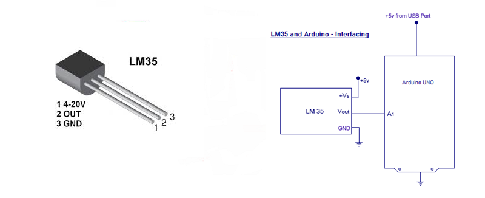

LM35 is an analog, linear temperature sensor whose output voltage varies linearly with change in temperature. LM35 is three terminal linear temperature sensor from National semiconductors. It can measure temperature from -55 degree Celsius to +150 degree Celsius. The voltage output of the LM35 increases 10mV per degree Celsius rise in temperature. LM35 can be operated from a 5V supply and the stand by current is less than 60uA.
Bread Board Layout
The +5v for LM35 can be taken from the +5v out pin of Arduino uno. Also the ground pin of LM35 can be connected to GND pin of Arduino uno. Connect Vout (the analog out of LM35) to any of the analog input pin of Arduino uno. In this circuit diagram, we have connected Vout of LM35 to A1 of Arduino.The temperature measured using LM 35 and given it to the Arduino. The measured temperature is displayed through serial monitor.
float tempf; //variable to store temperature in Fahreinheit
float vout; //temporary variable to hold sensor reading
void setup()
{
pinMode(sensor,INPUT); // Configuring pin A1 as input
Serial.begin(9600);
}
void loop()
{
vout=analogRead(sensor);
vout=(vout*500)/1023;
tempc=vout; // Storing value in Degree Celsius
tempf=(vout*1.8)+32; // Converting to Fahrenheit
Serial.print("in DegreeC=");
Serial.print("\t");
Serial.print(tempc);
Serial.println();
Serial.print("in Fahrenheit=");
Serial.print("\t");
Serial.print(tempf);
Serial.println();
delay(1000); //Delay of 1 second for ease of viewing
}